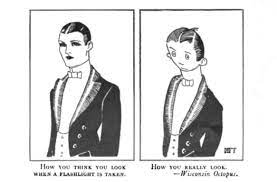

In 1921 the first meme was created. The meme was a strange drawing comparing what you would think you would look like when a photo is taken of you vs what you really look like after the photo is taken. This picture became famous fairly quickly. This was where memes started.
Several years later on Spetember 19th of 2008, the renowed (And still famous to this day) Trollface was made! The Trollface meme mainly consisted of a thing called "Trolling", which was a form of pranking one or many individuals. These memes would consist of the Trollface trolling someone and that said person getting enraged at the fact that they had been trolled. The Trollface gained fame very fast but would enevatably fall into onscurity like many other memes and meme formates.

However, the Trollface would make a comeback several years later in 2020. However, something was wrong... The Trollface had seen how meme culture had evolved and was disgusted by the fact that people had tarnished the meme name. Infuriated, the something happened to the Trollface. Something changed changed changed changed changed changed changed changed changed changed changed changed
changed changed changed changed changed changed changed changed changed changed changed changed changed changed changed changed changed changed changed changed changed changed changed changed changed changed changed changed changed changed changed changed changed changed changed changed changed changed changed changed changed changed changed changed changed changed
changed changed changed changed changed changed changed